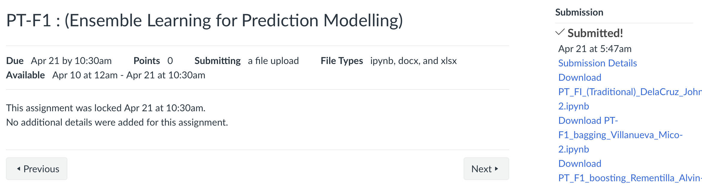
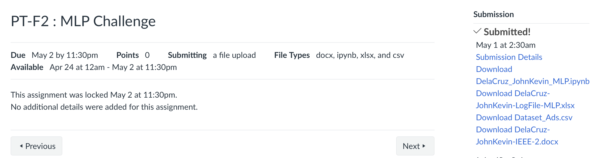
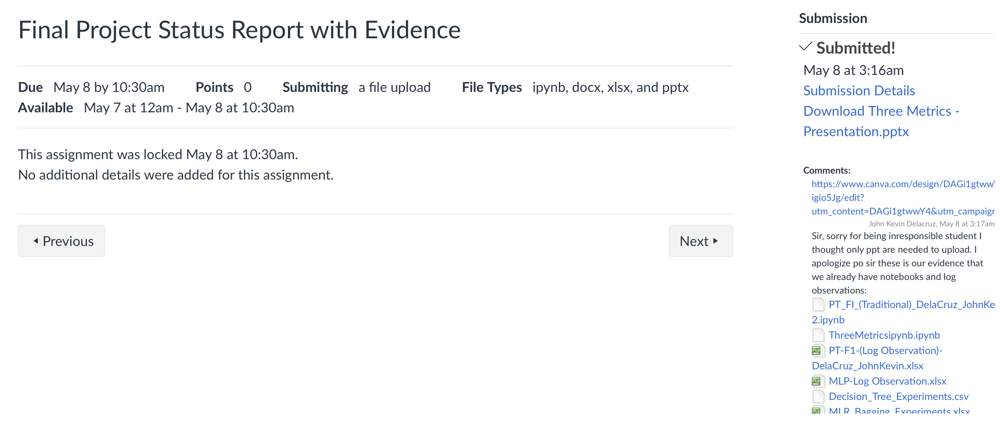

PT-F1: Ensemble Learning for Prediction Modelling
PT-F2: MLP Challenge
In this Final Deliverables I gained a lot of knowledge. Start with, Comparing Logistic Regression with DT for Multinomial Classification, Both classification model can easily configure to enhance their performance. However, I learned that Decision Tree outperformed Logistic Regression because of handling with complex, non-linear relationships, high-dimensional data, and the presence of outliers or missing values. Followed by, Research Proposal Prensetation where I learned how can I apply my knowledge that I learned in real-world problem scenario.
Final Quiz
In this final reseach presentation, we present our current progress which is implementation of different algorithms for predicting customer engagement and conversion rate and configuring the model throught hyperparameters and list it in log observation
Final Examination
I'm pretty confident on my answer in this Final Exam especially in demonstrating the process of feed-diagram and back propagation error, as well as, the diagram of boosting and how it works.s
Overall, compared to previous term, this is the most challenging activities, presentation, and exam that I encountered. Especially in understanding the concept and how to apply the Multilayer Perceptron and how it works. As well as, the hyperparameters of it, such as hidden layer, solver, epoch, and etc.